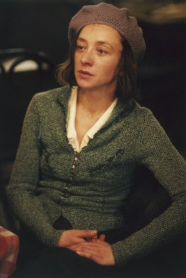
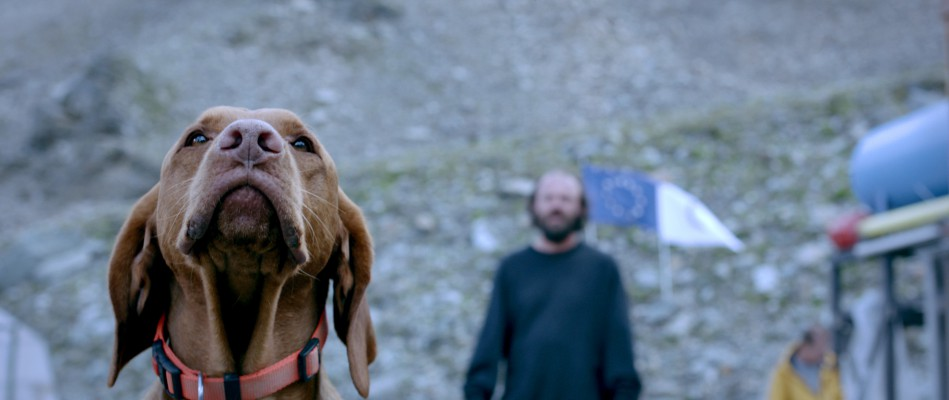

#1723 Lourdes

 IMDB-Wertung: 6.9 / 10
IMDB-Wertung: 6.9 / 10  Metascore: 71
Metascore: 71 
Christine ist von Kindheitstagen an den Rollstuhl gefesselt. Sie lässt sich zu einer Pilgerreise nach Lourdes überreden, auch wenn sie dem Wunderglaube skeptisch gegenüber steht. Im Gegensatz zu einigen der anderen kranken Mitreisenden erwartet sie nichts von den diversen Anwendungen wie dem Baden oder dem Berührend der Felsen der Grotte. Doch sie findet Gefallen an einem der Begleiter ihrer Gruppe, einem Freiwilligen des Malteserordens, der sich rührend um sie kümmert. Dann geschieht tatsächlich ein Wunder.
Jahr: 2009
Dauer: 96 Minuten
FSK: 0
Land: Österreich Studio: NFP DistributionTonspuren:
Untertitel: Deutsch,
Auflösung: 1080p (1920x1040) Größe: 3461 MB
Genre: Drama
Regisseur: Jessica Hausner
Drehbuch: Géraldine Bajard, Jessica Hausner
Soundtrack:
Darsteller:
-  Sylvie Testud als Christine
 Léa Seydoux als Maria
Léa Seydoux als Maria- Bruno Todeschini als Kuno
-  Gerhard Liebmann als Pater Nigl
- Orsolya Tóth als Child in Wheelchair
- Aurelia Burckhardt als Nonne
- Irma Wagner als Pilgerin
- Elina Löwensohn als Cécile
- Gilette Barbier als Fr. Hartl
- Linde Prelog als Frau Huber
- Heidi Baratta als Frau Spor
- Hubert Kramar als Herr Oliveti
- Helga Illich als Frau Oliveti
- Walter Benn als Herr Hruby
 Petra Morzé als Mother
Petra Morzé als Mother- Katharina Flicker als Sonja
- Thomas Uhlir als Max
- Martin Thomas Pesl als Frank
- Gerith Holzinger als Malteserin
- Karoline Kuchar als Malteserin
- Birgit Langer als Malteserin
- Maria Lassl als Malteserin
- Stefan Lirsch als Malteser
- Uta Ohrner als Malteserin
- Josef Prenner als Malteser
- Andrea Schlor als Malteserin
- Renate Summer als Malteserin
- Adolf Tax als Malteser
- Theresia Wegmann als Malteserin
- Gertrude Baumgartner als Pilgerin
- Barbara Chobola als Pilgerin
- Florian Heinz Dubois als Pilger
- Martin Habacher als Pilgrim
- Angelo Kreuzberger als Pilger
- Armand Lenaerts als Pilger
- Hermine Popper als Pilgerin
- Mike Tennison als Pilger
- Ernestine Winter als Pilgerin
- Jackie Wulf als Pilger
- Bernadette Schneider als Hospitaliere
- Robert Brun als Le médecin
- Pierre-Emmanuel Finzi als Assistant du médecin
- Elisabeth Kervarrec als La secrétaire
- Jacky Pratoussy als Jean-Pierre Bely
- Laislavo 'Lado' Kravanja als Chanteur
Datei: X:\2009(G-M)\Lourdes (2009, FSKo.Al., 1920x1040).mkv seit 10.08.2015
Festplatte: HD 2009(G-Z)-2010(A-F)
 Es gibt insgesamt 82 Filme in der Gruppe '2009(G-M)'
Es gibt insgesamt 82 Filme in der Gruppe '2009(G-M)'